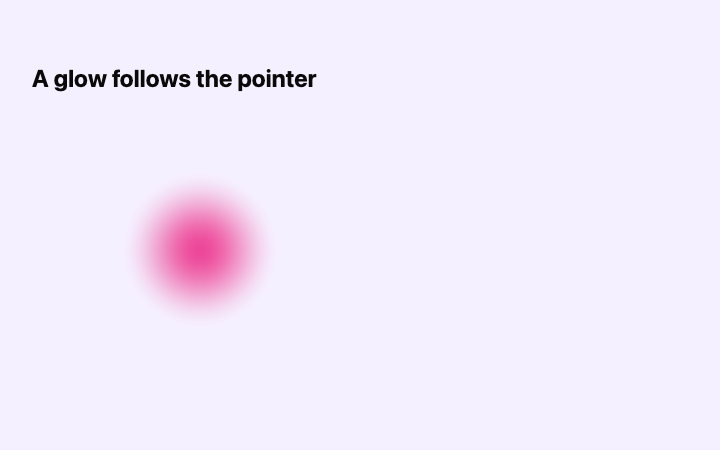

Docs
Using Specimen
Specimen is a browser extension that captures a web page, or one part of it, as it renders: screenshots, editable layers, colours, type, motion and the code behind its effects. This guide covers every button in the panel and where each output goes.
Install
Specimen is installed from source for now. You need Node.js 23+, pnpm and Git.
git clone https://github.com/ayushozha/specimen.git
cd specimen
pnpm install
pnpm build:all- Chrome, Edge, Brave, Arc
- Open the browser's extensions page (
chrome://extensions,edge://extensions,brave://extensions), turn on Developer mode, select Load unpacked and chooseapps/extension/.output/chrome-mv3. - Firefox 140+
- Open
about:debugging#/runtime/this-firefox, select Load Temporary Add-on and chooseapps/extension/.output/firefox-mv3/manifest.json. - Safari on macOS
- Run
pnpm safari:project, openapps/safari/Specimen/Specimen.xcodeprojin Xcode and run it. In Safari, turn on Settings → Developer → Allow unsigned extensions (Safari asks for your Mac password and turns it off again when it quits), then enable Specimen under Settings → Extensions.
Updating. After git pull and pnpm build:all, select Reload on Specimen's card in the extensions page, or restart the browser. Rebuild and run the Xcode project again for Safari.
Your first capture
- Open the page you want and click Specimen in the toolbar. In Chromium the panel opens beside the page; in Safari it opens in a window docked beside it.
- Choose what to capture: Whole page, Some sections or One element, then select Capture whole page. Specimen scans the page (it scrolls once to load lazy content and declines cookie banners), then captures every section at 1440, 768 and 390 px.
- Watch the checklist. Each screenshot appears as it is taken, with a strip of everything captured so far. Cancel and restore the page stops the run at the next step and puts the page back as it was.
Include motion is on by default. It reloads the page with small recording hooks, records the load and a scroll through the page, steps through animations, hovers interactive elements, sweeps a cursor over every section and opens menus. That takes a few minutes on a long page. Turn it off for a quick, still capture.
Nothing runs until you select the button. To choose sections before capturing, choose Some sections, select Scan page, untick the sections you don't want, then select Capture (or Capture on one row for just that section).
Reading a capture
- Export
- Where the capture opens. Pick which part (All or one section's thumbnail scopes every export), then where it's going: Figma, Framer, Code agent or Other. Each shows one main action and the few others that fit; Download .zip is at the bottom.
- Inspect › Colours
- Colours by role, every swatch with its exact value (
oklch()and Display P3 kept as written), CSS variables, gradients, and WCAG contrast for each text and background pair. The eyedropper finds the nearest page colour. - Inspect › Motion
- Counts of animations, hover and focus effects, scroll effects, pointer effects and menus, per section; each pointer effect as a clip (hover it to play); the page-load and scroll recordings; and Record interaction.
- Inspect › Stack
- Detected frameworks, styling, animation libraries and site builders, each with its evidence.
- Inspect › Sections
- The sections this capture holds, with a thumbnail and size each. To capture others, select New capture and choose Some sections.
- History
- The clock button in the header lists every capture of this session, with all its exports, until you close the panel.

Capture one element
Choose One element when you want one part of the page: a hero, a pricing table, a header, a single button.
- Select Pick an element to capture. Specimen scans the page first if it hasn't yet.
- Move over the page. The picker outlines the element under the pointer with its margin, padding and size. Press ↑ for the parent, ↓ for the child.
- Click, or press Enter. Press Esc or select the button again to cancel.
Only that element is captured, with every export the full page gets. Its motion is scoped to it: hover and focus states and animations inside it, and a pointer sweep over it and the space around it (at least 240 × 240 px), where glows and magnetic effects show. Buttons, links and images are named by their own text.
Motion
What Include motion captures
- Load and scroll. A clip of the page loading and one scrolling through it, cut into a clip per section.
- Animations. CSS and Web Animations stepped frame by frame, with keyframes, duration, delay and easing. GSAP tweens and ScrollTrigger settings are read from the page.
- Hover and focus. Each interactive element is hovered and focused with the real pointer. The changed styles, their transitions and before and after images are saved.
- Scroll effects. Elements are traced while the page scrolls, and classified as reveals (play once in view) or scroll-linked (follow the scroll position).
- Menus and accordions. Opened, captured, and closed again.
The pointer sweep

Some effects only respond to the mouse: ink and fluid trails, cursor followers, tilting cards. Specimen draws a cursor on the page and moves it over every screen of every section (up to three screens of a tall section), recording each stroke. You can watch it move. A section counts as reacting when the pixels change around the stroke beyond what the page does by itself, or when an element keeps moving with the pointer for the whole stroke. Hover effects are reported once, under hover, not again here.
Each effect is saved as a clip with the cursor in it, a frame-by-frame filmstrip, and a description: whether it paints into a canvas or moves elements, where, and how long the trail takes to fade.
Record interaction
If the page reacts in a way the sweep doesn't reach (a drag, a scrub, a gesture), select Record interaction (on the first screen, or under Missed an effect? in the Motion tab), move your own mouse over the page, then Stop. You get a clip with the cursor drawn in, a filmstrip and the pointer path, ready to save for an agent. Recording stops by itself after 30 seconds. Chromium only.
Copying
| Button | What goes on the clipboard |
|---|---|
| Copy everything (Export › Code agent) | One markdown document: the DESIGN.md (colours, type, spacing, every section with screenshots named and its motion), the stack, the motion cues with the rebuilt effect code, and the page's shader code. |
| Copy CSS, Copy JSON (Inspect › Colours) | The palette as CSS variables, or as JSON with every value, role and usage. |
| Copy motion (Inspect › Motion) | The motion cues per section and the rebuilt CSS, GSAP and Motion code. |
| Copy stack (Inspect › Stack) | The detected technologies as a list. |
| Export destinations | See the sections for each tool below. |
A clipboard holds text or one image per paste, so screenshots and clips stay as files: use Copy image, Save to folder or Download .zip for those.
Figma
Paste
In Export, choose Figma and select Copy for Figma, then press ⌘ V in Figma. The section pastes as editable layers: frames, text, images, gradients, borders and shadows. With All selected, sections paste stacked with a gap.
Import with the Specimen plugin
The plugin brings in what a paste can't: auto layout, colour variables, hover states, and motion.
- In the Figma desktop app, open Plugins → Development → Import plugin from manifest and choose
apps/figma-plugin/manifest.jsonfrom your Specimen folder (once). - In Specimen, choose Figma and select Save plugin file to save a
.figma.zip. - In Figma, run Plugins → Development → Specimen and drop the file on it. A full
.specimen.zipworks too.
You get one frame per section with real layers, colour variables and styles, hover states as component variants wired with Smart Animate at the captured duration and easing, and the screenshot as a hidden reference layer. Beside each section:
- its pointer-sweep and scroll clips as video layers that play,
- its pointer filmstrip, frame by frame,
- and its motion cues (timing, easing, shaders) as a Dev Mode annotation on the frame.
Video layers need a Figma plan that allows video. Where Figma refuses them, the filmstrip is still placed and the annotation lists the clips that were skipped.
Framer

Copy component
- Select a section's thumbnail, choose Framer, then select Copy component.
- In Framer, open Assets → Code → New file, replace its contents with the clipboard, and save.
- Drag the component onto the canvas. It scales to any width.
The component renders the section exactly as captured. If its canvas was drawn by a WebGL shader that fills the canvas, that shader runs live inside the component and follows the pointer, with the page's text still above it. Turn on Recorded motion in the component's properties to play the captured clip instead, for effects that can't run outside the site.
Motion overrides
Copy overrides copies Framer code overrides for the rebuilt hover, load, loop, scroll-reveal and scroll-linked effects. Paste them into a code file, select one of your own layers, and pick an override in its Code Overrides panel. The layer then moves with the captured timing and easing.
Other design tools
| Tool | How (Export › Other) | What you get |
|---|---|---|
| Paper | Copy HTML, then paste | The section as HTML with images inline; Paper turns it into layers. |
| Sketch, Penpot, Illustrator | Copy SVG or .svg | One self-contained SVG with images, background and fonts inside. |
| Photoshop | Save .psd | A layered file: a group per box, editable text, images as exact crops, the screenshot as a hidden reference. |
| Canva, Keynote, Slides, Notion | Copy image | The section's screenshot. |
| After Effects | .jsx | Run it with File → Scripts → Run Script File: a comp per section, each animated element a layer with eased keyframes. |
| Lottie | Lottie | Each animation and hover effect as Lottie JSON, for lottie-web, LottieFiles, Figma and Rive. |
Coding agents
- Claude Code, Codex, Cursor
- In Export, choose Code agent and select Save to folder (Chrome and Edge; other browsers download a zip) and pick your repo. Specimen writes
design-spec/:DESIGN.md, screenshots at each width, highlight images with numbered callouts,tokens.json, motion clips and filmstrips, and shader files. Then ask your agent, for example, “Build the hero exactly as indesign-spec/DESIGN.md, section 2.” - Claude, ChatGPT, Grok, Gemini
- Select Copy everything (or Copy prompt for the DESIGN.md alone), paste it into the chat, and attach the screenshots it names (Copy screenshot copies the selected section's).
What agents get from motion: every effect as plain text (what changes, from what to what, over how long, with which easing), the rebuilt CSS, GSAP and Motion code, filmstrips they can look at when the files are saved, and the page's own shader code for canvas effects. Agents can't watch video, so the filmstrips and text carry the motion to them.
Shaders
Canvas effects like ink, fluid and glow are drawn by shader programs, not by layers. With Include motion on, Specimen records every WebGL (GLSL) and WebGPU (WGSL) shader the page compiles, and works out which section's canvas each one draws. WebGPU shaders are matched by following what each render pass draws, so a renderer shared by several canvases is still split correctly. For WebGL it also records the last value of each uniform and how often the page set it; one set every frame is animated or follows the pointer.
The shaders are saved as page/shaders/*.glsl and *.wgsl with page/shaders.json, listed under each section in DESIGN.md, carried in the spec folder, and included in Copy everything. The shader code belongs to the site you captured: use it to understand and rebuild an effect, not to ship it as-is.
Simple WebGL shaders that fill a canvas run live in the Framer component. Multi-pass effects, such as WebGPU fluid simulations, depend on the site's own JavaScript to run, so design tools get their clip and agents get their shader code.
The bundle
Download everything (.zip) saves the full capture. Open index.html inside it for a browsable report.
example.com_2026-11-23T10-00-00.specimen.zip
index.html browsable report
manifest.json page, breakpoints, sections, motion summary, errors
palette.json stack.json
page/ full-page screenshots, page.mhtml, load and scroll clips,
motion.json, pointer.json, shaders/ and shaders.json
sections/<id>/ screenshots per width, <id>.html, scroll clip,
motion.json, interactions.json, pointer clip and filmstrip,
states/ (default, hover, focus, open)
exports/ figma.json, svg/, psd/, after-effects/, lottie/,
code/ (CSS, GSAP, Motion, Framer overrides), palette files
design/ assets/Command line
The CLI runs the real extension in Chromium to capture many pages, compare captures and check them. Run npx playwright install chromium once first.
node apps/cli/src/cli.ts capture https://example.com https://example.com/pricing --out captures
node apps/cli/src/cli.ts diff before.specimen.zip after.specimen.zip --out diff
node apps/cli/src/cli.ts check captures/*.specimen.zip
node apps/cli/src/cli.ts media captures/example.com_2026-11-23T10-00-00.specimen.zip --out mediacapture records motion unless you pass --no-motion, and never overwrites a file. All options are in the README.
Browser support
| Chrome, Edge, Brave, Arc | Firefox | Safari | |
|---|---|---|---|
| Screenshots, layers, palette, stack, exports | Yes | Yes | Yes |
| Load, scroll and pointer clips | Yes | No | No |
| Animations frame by frame | Yes | Yes | No |
| Hover and focus states | Yes | Yes | Yes |
| Pointer sweep, Record interaction | Yes | No | No |
| Shader capture | Yes | Yes | Not tested |
Privacy and permissions
Specimen runs on your device. It has no account, analytics or server, and never sends captures anywhere. In Chromium it uses the browser's debugging permission on the tab you capture, so the browser shows a “started debugging this browser” bar while the panel is connected; Cancel on that bar ends the session. Read the privacy policy.
Questions
Why doesn't motion come across when I paste into a design tool?
Design tools accept SVG, HTML or an image from the clipboard, and none of those can carry animation, so a paste is always a still frame. Use the Figma plugin (video layers, hover prototypes, annotations), the Framer component and overrides, or the After Effects and Lottie exports to take the motion with you.
The sweep didn't find an effect I can see.
Use Record interaction and move the mouse yourself. Effects that need a click, a drag or a specific path aren't triggered by a sweep.
The panel says the page changed.
The page navigated or reloaded after the scan. The next capture scans it again by itself, or select Scan again now.
A capture with motion takes several minutes.
The pointer sweep spends about six seconds per screen of each section, up to three minutes in all. Turn off Include motion for a still capture, or choose One element.
Specimen disappeared from Safari.
Safari turns off Allow unsigned extensions every time it quits. Turn it on again in Settings → Developer, then enable Specimen in Settings → Extensions.
Copy says “Document is not focused”.
The browser only allows clipboard writes from the focused panel. Click inside the panel, then select the copy button again.